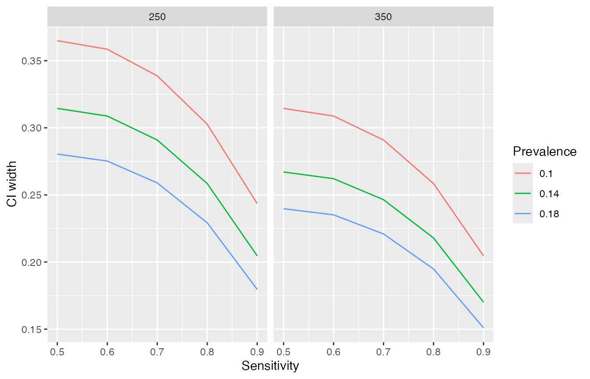

Bland (2009) recommended to base study sizes on the width of the confidence interval rather the power of a statistical test. The goal of presize is to provide functions for such precision based sample size calculations. For a given sample size, the functions will return the precision (width of the confidence interval), and vice versa.
presize is loaded like any other R Package:
Using presize
Here we present a couple of examples of using presize to determine the suitable sample size for a trial.
Precision with a fixed N
As preparation for a trial to estimate the sensitivity and specificity of a mobile colposcope, a device for detecting tissue abnormality, a sample size calculation was made to estimate the precision of the sensitivity of the device. A best guess for sensitivity was 75% at a prevalence of 15% with a desired sample size of 250 participants. As such, the question to be answered is how wide is the confidence interval going to be under such a scenario?
We plug the values into the prec_sens (precision of sensitivity) function as follows
(ss <- prec_sens(sens = .75, # sensitivity
prev = .15, # prevalence
ntot = 250, # sample size
method = "wilson"))
#> estimating n from 'ntot' and 'prev'
#>
#> precision for a sensitivity with Wilson confidence interval.
#>
#> sens sensadj n prev ntot conf.width conf.level lwr upr
#> 1 0.75 0.7270475 38 0.15 250 0.2663919 0.95 0.5938516 0.8602435
#>
#> NOTE: sensadj is the adjusted sensitivity, from which the ci is calculated.
#> n is the number of positives, ntot the full sampleWe see that with 250 participants, the confidence interval would be from 59% (lwr) to 86% (upr).
Note that Wilson’s method of calculating confidence intervals adjusts the point estimate to allow the calculation of a symmetrical CI. This is the sensadj variable. For some measures there are multiple methods available. In the case of prec_sens (as well as prec_spec and prec_prop), there are four different approaches for creating confidence intervals, each yielding slightly different results.
For specificity, we use the prec_spec function instead. For demonstration purposes, we can also change the method used to calculate the CI.
prec_spec(spec = .75, # specificity
prev = .15, # prevalence
ntot = 250, # sample size
method = "exact")
#> estimating n from 'ntot' and 'prev'
#>
#> precision for a specificity with exact confidence interval.
#>
#> spec specadj n prev ntot conf.width conf.level lwr upr
#> 1 0.75 NA 213 0.15 250 0.1203922 0.95 0.6862538 0.806646
#>
#> NOTE: specadj is the adjusted specificity, from which the ci is calculated.
#> n is the number of negatives, ntot the full sample.Using the other functions in presize is the same. For instance the precision of a mean of 60 with an SD of 10 and 40 observations is calculated as follows.
prec_mean(60, sd = 10, n = 40)
#>
#> precision for mean
#>
#> mean sd n conf.width conf.level lwr upr
#> 1 60 10 40 6.39631 0.95 56.80184 63.19816N for a fixed precision
While fixing the sample size is sometimes necessary, it is more common to select a sample size based on a given precision. We might want to achieve a sensitivity of a given amount (e.g. plus-minus 5%). This is also possible with presize. Using the same code as above, we replace the ntot argument with the conf.width argument.
(ss <- prec_sens(sens = .75, # sensitivity
prev = .15, # prevalence
conf.width = .1, # CI width
method = "wilson"))
#>
#> sample size for a sensitivity with Wilson confidence interval.
#>
#> sens sensadj n prev ntot conf.width conf.level lwr
#> 1 0.75 0.7466814 285.5428 0.15 1903.619 0.1 0.95 0.6966814
#> upr
#> 1 0.7966814
#>
#> NOTE: sensadj is the adjusted sensitivity, from which the ci is calculated.
#> n is the number of positives, ntot the full sampleUnder this scenario, 1904 participants (of which approximately 286 would have the condition) will yield a CI width of 0.1 (10%), on average.
Most of the functions in presize have similar options, although the sample size argument is generally n instead of ntot (prec_sens and prec_spec are special in that you can pass either a number of individuals with a condition to be detected with n, or you pass ntot and prev to get the CI width for a mixed group in which case n is derived from ntot and prev). The calculations for sensitivity can also be preformed if the number of cases rather than the total number and prevalence are available. For instance, if we have 50 individuals with the condition and we expect a sensitivity of 60%, we can put those values in instead.
prec_sens(.6, n = 50, method = "wilson")
#>
#> precision for a sensitivity with Wilson confidence interval.
#>
#> sens sensadj n prev ntot conf.width conf.level lwr upr
#> 1 0.6 0.5928652 50 NA NA 0.2621017 0.95 0.4618144 0.7239161
#>
#> NOTE: sensadj is the adjusted sensitivity, from which the ci is calculated.
#> n is the number of positives, ntot the full sampleSensitivities and specificities are just proportions so prec_prop can also be used for this latter example.
prec_prop(.6, n = 50, method = "wilson")
#>
#> precision for a proportion with Wilson confidence interval.
#>
#> p padj n conf.width conf.level lwr upr
#> 1 0.6 0.5928652 50 0.2621017 0.95 0.4618144 0.7239161
#>
#> NOTE: padj is the adjusted proportion, from which the ci is calculated.Using the other functions in presize is the same. For instance, the sample size to obtain a CI width of 5 units with a mean of 60 with an SD of 10 is calculated as follows.
prec_mean(60, sd = 10, conf.width = 5)
#>
#> sample size for mean
#>
#> mean sd n conf.width conf.level lwr upr
#> 1 60 10 63.8979 5 0.95 57.5 62.5Multiple scenarios
It is common for only a vague idea of what to expect in terms of SDs, sensitivities, etc, so it is often worthwhile creating a set of scenarios.
Returning to the colposcope example from above… We want to see how the CI width varies with different sensitivities. With presize, it’s easy to run different scenarios, simply by passing multiple values to each parameter (where multiple values are passed, they should have the same length!). For varying a single parameter, scenarios can be created with seq and passed that to the appropriate presize functions argument. Here we vary sensitivity between 50% and 95% in steps of 5%.
(scenario_data <- prec_sens(sens = seq(.5, .95, .05),
prev = .15,
ntot = 250,
method = "wilson"))
#> estimating n from 'ntot' and 'prev'
#>
#> precision for a sensitivity with Wilson confidence interval.
#>
#> sens sensadj n prev ntot conf.width conf.level lwr upr
#> 1 0.50 0.5000000 38 0.15 250 0.3030014 0.95 0.3484993 0.6515007
#> 2 0.55 0.5454095 38 0.15 250 0.3016224 0.95 0.3945983 0.6962207
#> 3 0.60 0.5908190 38 0.15 250 0.2974469 0.95 0.4420956 0.7395424
#> 4 0.65 0.6362285 38 0.15 250 0.2903543 0.95 0.4910514 0.7814056
#> 5 0.70 0.6816380 38 0.15 250 0.2801231 0.95 0.5415765 0.8216996
#> 6 0.75 0.7270475 38 0.15 250 0.2663919 0.95 0.5938516 0.8602435
#> 7 0.80 0.7724570 38 0.15 250 0.2485815 0.95 0.6481663 0.8967478
#> 8 0.85 0.8178665 38 0.15 250 0.2257283 0.95 0.7050024 0.9307307
#> 9 0.90 0.8632761 38 0.15 250 0.1960769 0.95 0.7652376 0.9613145
#> 10 0.95 0.9086856 38 0.15 250 0.1557928 0.95 0.8307891 0.9865820
#>
#> NOTE: sensadj is the adjusted sensitivity, from which the ci is calculated.
#> n is the number of positives, ntot the full sampleWe can also use expand.grid to pass scenarios varying multiple parameters simultaneously. Below we vary sensitivity, prevalence and sample size.
scenarios <- expand.grid(sens = seq(.5, .95, .1),
prev = seq(.1, .2, .04),
ntot = c(250, 350))
(scenario_data <- prec_sens(sens = scenarios$sens,
prev = scenarios$prev,
ntot = scenarios$ntot,
method = "wilson"))
#> estimating n from 'ntot' and 'prev'
#>
#> precision for a sensitivity with Wilson confidence interval.
#>
#> sens sensadj n prev ntot conf.width conf.level lwr upr
#> 1 0.5 0.5000000 25 0.10 250 0.3649551 0.95 0.3175224 0.6824776
#> 2 0.6 0.5866808 25 0.10 250 0.3585724 0.95 0.4073946 0.7659670
#> 3 0.7 0.6733615 25 0.10 250 0.3387033 0.95 0.5040099 0.8427132
#> 4 0.8 0.7600423 25 0.10 250 0.3027037 0.95 0.6086905 0.9113942
#> 5 0.9 0.8467231 25 0.10 250 0.2435219 0.95 0.7249621 0.9684841
#> 6 0.5 0.5000000 35 0.14 250 0.3144853 0.95 0.3427574 0.6572426
#> 7 0.6 0.5901099 35 0.14 250 0.3087656 0.95 0.4357271 0.7444927
#> 8 0.7 0.6802198 35 0.14 250 0.2909327 0.95 0.5347534 0.8256862
#> 9 0.8 0.7703297 35 0.14 250 0.2584917 0.95 0.6410839 0.8995755
#> 10 0.9 0.8604396 35 0.14 250 0.2046081 0.95 0.7581356 0.9627436
#>
#> [Output truncated at 10 of 30 rows]
#> NOTE: sensadj is the adjusted sensitivity, from which the ci is calculated.
#> n is the number of positives, ntot the full sampleFrom the print method, we see the details of the individual scenarios. The default print method for presize objects only prints the first 10 rows, but there are in fact 30 rows (there is also a print function, with an n option to define how many rows to print, e.g. print(scenario_data, n = 5) can be used to print the first five rows).
Using the as.data.frame method, we can convert the list returned by prec_sens to a dataframe from which we can create tables or figures. Where multiple scenarios are calculated, plotting them can be particularly informative. ggplot2, for example, is particularly useful for this. Below we show CI width as a function of sensitivity, but the other parameters could be chosen instead.
scenario_df <- as.data.frame(scenario_data)
library(ggplot2)
ggplot(scenario_df,
aes(x = sens,
y = conf.width,
# convert colour to factor for distinct colours rather than a continuum
col = as.factor(prev),
group = prev)) +
geom_line() +
labs(x = "Sensitivity", y = "CI width", col = "Prevalence") +
facet_wrap(vars(ntot))
We could also create a table of the scenarios containing the CIs. Below we select only the scenarios with sensitivities above 70% and reshape and format the table and use the gt package to print a nice table in HTML.
library(dplyr)
#>
#> Attaching package: 'dplyr'
#> The following objects are masked from 'package:stats':
#>
#> filter, lag
#> The following objects are masked from 'package:base':
#>
#> intersect, setdiff, setequal, union
library(tidyr)
library(magrittr)
#>
#> Attaching package: 'magrittr'
#> The following object is masked from 'package:tidyr':
#>
#> extract
library(gt)
scenario_df %>%
# create the values needed specifically for the table
mutate(
txt = sprintf("%3.1f - %3.1f", lwr * 100, upr * 100),
`Prevalence (%)` = prev * 100,
Sensitivity = sens * 100,
ntot = sprintf("N = %1.0f", ntot)) %>%
# select particular scenarios and variables to keep
filter(sens > .7) %>%
select(ntot, Sensitivity, `Prevalence (%)`, txt) %>%
# reshape
pivot_wider(
names_from = Sensitivity,
values_from = txt,
id_cols = c(`Prevalence (%)`, ntot)) %>%
# group by ntot to split the table a little
group_by(ntot) %>%
# create the table
gt() %>%
# add a header
tab_spanner(
label = "Sensitivity (%)",
columns = 2:4
) %>%
cols_align("center", columns = 2:4) %>%
# increase the spacing between cells
tab_style(
style = "padding-left:12;padding-right:12;",
locations = cells_body()
)| Prevalence (%) | Sensitivity (%) | |
|---|---|---|
| 80 | 90 | |
| N = 250 | ||
| 10 | 60.9 - 91.1 | 72.5 - 96.8 |
| 14 | 64.1 - 90.0 | 75.8 - 96.3 |
| 18 | 66.2 - 89.1 | 77.9 - 95.8 |
| N = 350 | ||
| 10 | 64.1 - 90.0 | 75.8 - 96.3 |
| 14 | 67.0 - 88.8 | 78.6 - 95.7 |
| 18 | 68.5 - 88.0 | 80.2 - 95.3 |